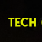

Présentation
Développeur autodidacte, j'ai commencé à apprendre le developpement php dans les années 2000, d'abord pour mon premier site personnel, un modeste journal en ligne (L'info est à vous) puis pour faire d'autres projets personnels divers et variés (roman participatif: au fil des mots, site de prévention...).
Féru de nouvelles technologies, j'ai continué mon apprentissage du PHP, Javascript, puis Flash et son language dynamique ActionScript d'abord via Macromedia Flash puis passant sous GNU/Linux en utilisant MTASC puis Haxe pour générer mes swf...
Mes divers projets et expériences m'ont permis petit à petit d'en faire aujourd'hui mon métier.
Sur mon temps personnel, je créé des applications et jeux linux, écris des articles pour le magazine Linux Pratique/Magazine, développe mon framework php opensource, mon site de prévention et d'autres projets opensource (dispo sur mon GitHub).
Amateur de logiciel libre, vous avez pu m'entendre en tant qu'animateur du podcast opensource nipSource (de la galaxie nipCast, merci à Ben Curdy de nous avoir fait confiance ;)
Je développe au quotidien avec des solutions libres comme Visual Studio Code, Godot le tout sous LMDE ou Kubuntu selon l'humeur du moment
Et accessoirement: dans l'équipe d'une jeune distribution GNU/Linux française GLF OS, et membre actif des communautés Gaming Linux FR et TechCafé
Féru de nouvelles technologies, j'ai continué mon apprentissage du PHP, Javascript, puis Flash et son language dynamique ActionScript d'abord via Macromedia Flash puis passant sous GNU/Linux en utilisant MTASC puis Haxe pour générer mes swf...
Mes divers projets et expériences m'ont permis petit à petit d'en faire aujourd'hui mon métier.
Sur mon temps personnel, je créé des applications et jeux linux, écris des articles pour le magazine Linux Pratique/Magazine, développe mon framework php opensource, mon site de prévention et d'autres projets opensource (dispo sur mon GitHub).
Amateur de logiciel libre, vous avez pu m'entendre en tant qu'animateur du podcast opensource nipSource (de la galaxie nipCast, merci à Ben Curdy de nous avoir fait confiance ;)
Je développe au quotidien avec des solutions libres comme Visual Studio Code, Godot le tout sous LMDE ou Kubuntu selon l'humeur du moment
Et accessoirement: dans l'équipe d'une jeune distribution GNU/Linux française GLF OS, et membre actif des communautés Gaming Linux FR et TechCafé
Sites
-
Supercapote Mon site de préventionsupercapote.com
-
MkFramework Framework php opensource, rétrocompatible depuis 2009mkframework.com
Participations
-
Linux Magazine/Pratique Le magazine où vous pouvez me lireboutique.ed-diamond.com
-
 Gaming Linux FR Membre actif de la communauté Gaming Linux FRwww.gaminglinux.fr
Gaming Linux FR Membre actif de la communauté Gaming Linux FRwww.gaminglinux.fr -
 GLF OS Dans l'équipe de la distribution GNU/Linux GLF OS (basée sur NixOs)glfos.org
GLF OS Dans l'équipe de la distribution GNU/Linux GLF OS (basée sur NixOs)glfos.org -

TechCafé Membre actif de la communauté TecCafétechcafe.fr
Anciens projets
-
NipSource Notre ancien podcast sur l' opensourcenipcast.com